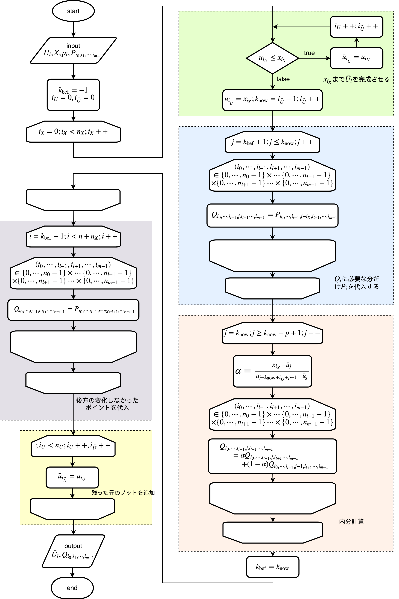

\(
\newcommand{\bm}[1]{\boldsymbol{#1}}
\newcommand{\d}{{\rm d}}
\newcommand{\div}{\nabla\cdot}
\newcommand{\grad}{\nabla}
\newcommand{\e}[1]{\bm{e}_{#1}}
\newcommand{\pard}[3]{\frac{\partial^{#2} #3}{\partial #1^{#2}}}
\newcommand{\T}{^{\rm T}}
\newcommand{\l}{<}
\newcommand{\g}{>}
%
\newcommand{\ki}[1]{\langle#1\rangle}
\newcommand{\iki}[1]{\langle\!\!\!\>\langle#1\rangle\!\!\!\>\rangle}
\)
さて、前回まではノットを同時に複数個挿入したり（ノット精細化）、多変数のBスプラインに対して
1つのノットを挿入したりしてきた。今回はそれらをまとめて、多変数のBスプラインに対して
ノット精細化を試みる。
しかし、基本的な考え方は2つの手法そのままである。
フローチャートをまずは示そう。
